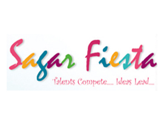
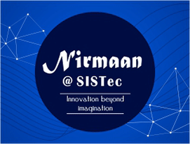

Amongst all the engineering branches, computer science has been found to be the most popular choice of the students. This branch of engineering is perceived to be popular due to its research scopes (bio, mechanics, neuro-science , etc) and is known to be challenging while offering good career opportunities and remuneration. Computer science and engineering graduates can make a career in various areas like web applications, computer graphics, video games, enterprise computing , embedded systems, network administration, mobile applications, computer vision,scientific modelling, computer security, database systems, animation , wireless network, artificial intelligence, core companies, computational skills, computer manufacturing, computer programming, computational biology, super-computing to name a few. According to him, almost all industries have job profiles for computer engineers hence the increasing demand for them. Apart from core subjects such as Object Oriented Programming, Data Structures, Computer Architecture, Analysis and Design of Algorithms, Operating Systems, Compiler Design and Software Engineering, the course curriculum imbibes inter disciplinary approach. Subjects such as Microprocessor, Digital Circuits and Systems have great practical utility and demand in the industry. Students can also opt inter-disciplinary subjects as electives. The department also offers M.Tech curriculum in the Computer Science stream as its post graduate initiatives.
Almost all industries have job profiles for computer engineers hence the increasing demand for them. Apart from core subjects such as Object Oriented Programming, Data Structures, Computer Architecture, Analysis and Design of Algorithms, Operating Systems, Compiler Design and Software Engineering, the course curriculum imbibes inter disciplinary approach. Subjects such as Microprocessor, Digital Circuits and Systems have great practical utility and demand in the industry. Students can also opt inter-disciplinary subjects as electives. The department also offers M.Tech curriculum in the Computer Science stream as its post graduate initiatives.
Almost all industries have job profiles for computer engineers hence the increasing demand for them. Apart from core subjects such as Object Oriented Programming, Data Structures, Computer Architecture, Analysis and Design of Algorithms, Operating Systems, Compiler Design and Software Engineering, the course curriculum imbibes inter disciplinary approach. Subjects such as Microprocessor, Digital Circuits and Systems have great practical utility and demand in the industry. Students can also opt inter-disciplinary subjects as electives. The department also offers M.Tech curriculum in the Computer Science stream as its post graduate initiatives.
Almost all industries have job profiles for computer engineers hence the increasing demand for them. Apart from core subjects such as Object Oriented Programming, Data Structures, Computer Architecture, Analysis and Design of Algorithms, Operating Systems, Compiler Design and Software Engineering, the course curriculum imbibes inter disciplinary approach. Subjects such as Microprocessor, Digital Circuits and Systems have great practical utility and demand in the industry. Students can also opt inter-disciplinary subjects as electives. The department also offers M.Tech curriculum in the Computer Science stream as its post graduate initiatives.
I love to laugh and be silly but also know when to be serious. I tend to think I am always right. I take on way too many responsibilites even if it stresses me out because I can't say no for fear of letting someone down. I would rather stress myself out than say no to someone and have them feel stressed. I cannot wait to have a family of my own someday but fear that day is very far into my future. My biggest fear in life is never experiencing true love. I enjoy the simple things in life. Being happy is a state of mind, and I don't think people should settle for less than they deserve. I always look toward the next best thing. I like seeing other people happy. When someone else is down, it breaks my heart. I've been through more than most people my age, but hey, it's what has made me stronger. Life has thrown me challenges, and so far, I've come out on top. I realized who my real friends are, and that my family always comes first..always. Photography is a passion of mine. I love music and movies. Heroes and Chuck are my favorite TV shows, so that means Monday nights I'm unavailable! I'm average, and that's okay. I'm not one of those girls that you turn your head toward when I walk down the street, and that's okay too. There is more to life than beauty on the outside. It's about what's on the inside. That's what really counts.

